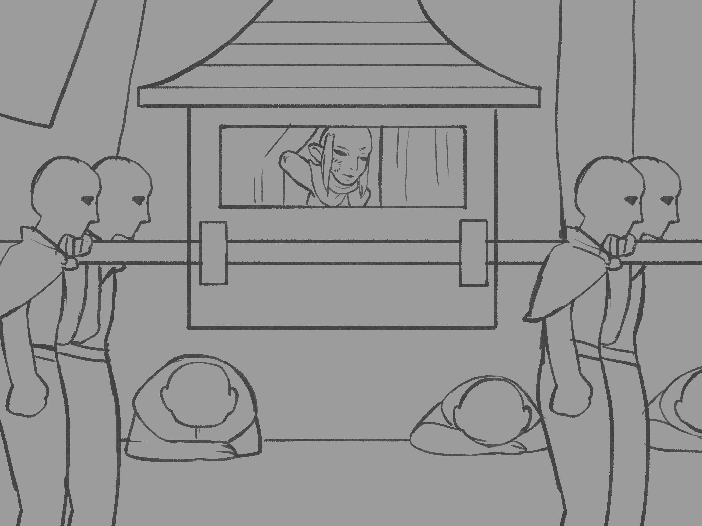

Chapter 2: The Council of Spirit
Seats of the Eclipse


Seats of the Eclipse
15051.10.17
站在天使人雕像前，烏波感到莫名的熟悉，卻又理不清到底是怎麼回事。他看見雕像兩側的培養箱，以及穿梭在這個空間內，穿著白袍的研究員們，和他們牽著的其他電漿人們。那些電漿人，長得和他一模一樣。
烏波走向其中一名研究人員，詢問他為何牽著的電漿人赤身裸體的，沒有穿衣服？研究員回應「實驗體不需要穿衣服」，烏波只好試著與後面的電漿人對話，但那名電漿人的反應卻十分遲鈍。烏波發現無法順利溝通，決定搗亂一番。他將離自己最接近的兩個培養箱打破，裡頭的培養液流了出來，懸浮在裡頭的電漿人也隨之流出，但他們看起來有氣無力的。烏波似乎聽見他們低聲呢喃著一個字：「巴薩爾・烏索」。
研究員們趕緊呼叫衛兵，兩名衛兵前來把烏波牽制著，並將他拖到其中一間手術室，嘗試將他固定在椅子上，便準備離開。但烏波反手將一名衛兵抓住，往手術室內扔去，另一名衛兵則倉皇逃走。趁著被摔到手術室內的衛兵重傷倒地，烏波離開了手術室，並將門關了起來。
烏波回到雕像前，他發現自己剛才的舉動除了引來衛兵外，根本沒什麼效用，這裡的人們像是所有事情都與他們無關一樣，根本不在意他的搗亂。於是他決定來場更大的。
烏波看著那座無心天使人的雕像，爬了上去，並停留在雕像的肩膀上。烏波拿出武器，試圖從天使人的臉上敲下些碎屑，周圍的各個研究員、衛兵以及逃竄出來的電漿人都圍了過來。他聽見底下傳來類似「巴薩爾・烏索」的語句。接著，他嘗試將他的手伸進天使人敞開的胸腔內，將手變形，充滿整個胸腔。這樣，就不再是「無心」了吧。
看見研究人員、衛兵和電漿人一一跪在地上，呢喃著「巴薩爾・烏索」，烏波神氣的爬了下來，慢慢的走出工廠。途中，他試圖拉了拉他迷失的手足們，想將他們從工廠拯救出來，但他們遲鈍的模樣，讓他也清楚，這些「失敗品」也許就該被留在工廠內了吧。
烏波的腦中想起一些破碎的片段：那名天使人，似乎曾經看著他，對他說過巴薩爾・烏索……
在工廠外等待的羅特和賽柏試圖和衛兵溝通，讓他們能進去工廠，但完全沒有用。於是在兩人的討論下，他們決定先去附近繞繞，畢竟也不知道要等烏波多久。
走到附近較為熱鬧的街道上，腳步依然沈重，甚至，對羅特來說，這股沉重感已經重到他快走不動了，於是他在路邊停了下來，躺了下來。這時，賽柏與羅特同時感到一股比之前被強迫下跪還要強烈的重力感，卻沒有聽見鐘聲。賽柏看見附近所有的人們都跪了下來，甚至上半身趴在地上，他便趕緊下跪。不遠處，賽柏看見有個拉上簾子的轎子，快要十個人扛著。轎子裡的人想必是高等的人，也許是議員也說不定。眼看轎子離他們越來越接近，賽柏趕緊將羅特翻身，變成趴在地上，他自己也趴在了地上，不敢抬頭。
轎子的陰影停在他們身邊，賽柏似乎聽見了簾子被拉開了聲音。幾秒鐘後，簾子被拉起，轎子又繼續往前了。直到轎子的陰影不再籠罩他們，賽柏才抬起頭，並將羅特翻了回來。他看見轎子朝著與他們目的地，靈魂議會，相同的方向前進。
賽柏陪著羅特在路邊再休息了一會兒，接著兩人決定先回工廠前確認烏波的狀況。同一時間，一名頭上罩著兜帽的陌生人決定默默跟著他們走。
回到工廠前，烏波正好推開門，與夥伴們重逢。賽柏與羅特和烏波分享情報，也知曉了「巴薩爾・烏索」這個他們還不明白的詞彙。他們決定繼續朝著靈魂議會的方向前進。躲在不遠處的陌生人決定繼續跟蹤他們。
朝著靈魂議會的方向前進，陌生人眼看烏波等人就快踏入衰竭域，便趕緊加快腳步追上他們。陌生人趕了上來，按住了烏波的肩膀，烏波掏出武器，警戒的訊問他，賽柏也掏出武器與他對峙。陌生人向他們說明，再繼續往前就要脫離不動域，進入衰竭域，他們的呼吸會變得很困難，必須要有心理準備。
接著，陌生人率先走過兩域的交界，氣管的緊縮來得突然，但他早已有心理準備了。他回頭看向烏波等人，他們一一小心地踏了過來。雖然已經有陌生人的警告，這股呼吸困難的不適感，還是十分噁心。他們也因此暫時信了這名陌生人。
陌生人自我介紹名為巴斯，他很顯然的是一名妖精，而在白袍底下藏著他穿在身上的重甲。烏波、羅特和賽柏紛紛以自己在斐納札的化名介紹給巴斯。巴斯表明自己也是從地面上來的，在地底下還沒有待得久到身體變形，但也已經久到各個區域都走過一遍了，除了靈魂議會外。他不確定他該不該走進那裡去。聽聞烏波等人的來意，他決定暫時當個嚮導，帶他們往靈魂議會去。
往東北方走了好一陣子，眼前，是一片綿延的柵欄。不過，人民們似乎也很自在的打開柵欄的門，走出或走入眼前的荒地。遠方是一座高塔，除此之外，荒地什麼都沒有，連植物也沒有。
烏波率先將門推開，踏入了荒地，其他人則一一跟上。他看了看地上的土，抓了一把，吃起來和在溫室吃的土沒什麼兩樣。其他人雖然看了覺得無法理解，卻也發現肚子餓了，便拿出自備的乾糧進食，就地野餐。稍作休息後，大夥兒繼續往高塔前進。
高塔有六個邊，每個邊各有一扇門，而每個門上各有不同的符號。烏波找了上面有心型符號的那扇門，嘗試打開，卻發現打不開。他們也發現人民們似乎都很清楚知道該走哪一扇門，因此他們推論，每個區的居民都會選擇
於是他們決定嘗試打開有四肢圖形的門。順利進入塔內，正前方有個聳立的圓柱，左右側則各有一個房間，但只有右側的房間有門，上面畫了個四肢的圖形。烏波嘗試繞到左側，心型符號門進入的位置，發現有標新型符號的房間一樣打不開門，於是只好進入標有四肢的房間。
門打開，裡面是一個辦公室。辦公桌後，坐著一名地侏，而他的雙手都整整齊齊地被切除。「烏波，你終於來了。」那名地侏說道。「歡迎，我是不動席雷・札漢。先讓你知道，我是支持你的。喔對，或者，我應該要稱呼你為巴薩爾・烏索？」
不動席向烏波等人說明關於爭取空心席一事，表示現在議會內有中意的不同人選，而有一定的席次支持烏波。對於這個席次的空缺，他們預計明天會在會議中得到最終的決議，並會告知人選們爭取的方法。烏波並不清楚可能會有什麼爭取的方法，但他對爭取這個席次挺有興趣的。不動席提議帶他去見見其他議員。
不動席的座椅突然移動，冒險者們看見他的座椅底下跪著四個魁儡般無神的人，四隻趴在地上爬行，以駝獸之姿扛著尊貴的不動席。不動席領著冒險者們走向了右邊的房間。
推開房門，一樣在辦公桌後，一名鼻吻部十分怪異的牛頭怪正振筆疾書著。不動席向冒險者們介紹他是衰竭席。衰竭席看向詢問他該如何證明自己適合空心席的烏波，同時從他變異鼻吻部發出沉重的呼吸聲。「證明給我看吧。」他說道。
烏波感到呼吸變得十分困難，甚至比他們經過衰竭域的時候還要更嚴重。同時，賽柏和羅特的狀況更糟，他們臉色發青，已經暈過去了。狀況不嚴重的巴斯和賽柏聯手將夥伴們扛出辦公室外，確保他們不繼續處在這嚴苛的環境內。烏波走回辦公室內，衰竭席則質問他「你對抗我一人撐得住，但保護不了你的夥伴。如果今天是更多的議員與你對抗，你有抵抗得住的能耐嗎？」不動席表明他要和衰竭席在辦公室內聊一會兒，建議烏波再去其他辦公室逛逛。
辦公室外，賽柏的狀況稍微穩定些，但羅特的狀況十分不好，甚至有更嚴重的趨勢。巴斯和烏波聯手花了些時間讓羅特暫時脫離危險，接著他們一起將羅特扛往旁邊的房間，虛弱的賽柏則自己慢慢走過去。
烏波與巴斯一起推開標有眼睛的門。門內一片漆黑，就連平常能在黑夜中稍微看見景象的他們，什麼也看不見。巴斯待在門邊，同時確保羅特和賽柏的狀況，烏波則踏入了辦公室內。突然間，他看見眼前飄過了疑似幽靈般的東西。追著這個幻影，烏波回頭看見巴斯守住的門被關上了，一回頭，辦公室光線充足，坐在辦公桌前的，是巴斯。烏波感到困惑，向前走向坐在辦公桌的巴斯，質問他這是怎麼回事。突然間，巴斯的雙眼流下鮮血，兩顆眼珠不對稱的從臉上滑下，掉落在桌上。烏波有些慌亂，但更多的是困惑。他回頭，往外走，在辦公室外看見好端端的巴斯，而巴斯並不清楚烏波口中怎麼會說著什麼他眼睛被挖出來之類的事。
烏波推開標有耳朵的門，裡面十分昏暗。他聽見了一個聲音，呼喊著他的名字，他便回應了那聲音。各種不同的聲音從不同方向，以不同音高、語調、聲響在他耳邊環繞著。「噢，我知道你最喜歡聽見什麼了。」其中一個聲音說道。「巴薩爾・烏索、巴薩爾・烏索、巴薩爾・烏索！」那是在工廠裡研究人員、衛兵與其他電漿人呼喊著的聲音。
烏波退出了這個辦公室。羅特還沒醒來，而賽柏看起來狀況好多了。但烏波知道，要爭取這個心空席的位子，似乎有很大的挑戰。現在他還不知道到底有什麼實際的挑戰，但各個議會的成員，似乎都在對他下馬威。
15051.10.17
Standing in front of the Angel Man statue, Ubbo felt inexplicably familiar, but he couldn't figure out what was going on. He saw the incubators on both sides of the statue, as well as the researchers in white robes walking through this space, and the other plasma people they led. Those plasma men looked exactly like him.
Ubbo walked up to one of the researchers and asked him why the plasma man he was holding was naked and unclothed? The researcher responded that "the subject does not need to wear clothes." Ubbo had no choice but to try to talk to the plasma man behind, but the plasma man's reaction was very slow. Ubbo found that he could not communicate smoothly and decided to make trouble. He broke the two incubators closest to him, and the culture fluid inside flowed out, as did the plasma men suspended inside, but they looked weak. Ubbo seemed to hear them whispering one word: "Ba'thal-Usou".
The researchers quickly called the guards, and two guards came to restrain Ubbo, dragged him to one of the operating rooms, tried to fix him on a chair, and prepared to leave. But Ubbo grabbed one of the guards with his backhand and threw him into the operating room, while the other guard fled in panic. While the guard who was thrown into the operating room fell to the ground seriously injured, Ubbo left the operating room and closed the door.
Ubbo Returning to the statue, he found that his actions had no effect at all except attracting guards. The people here acted as if everything had nothing to do with them and did not care about his troubles at all. So he decided to have a bigger one.
Ubbo looked at the statue of the Heartless Angel Man, climbed up, and stayed on the shoulders of the statue. Ubbo took out his weapon and tried to knock off some debris from the angel man's face. The surrounding researchers, guards, and the escaping plasma men gathered around him. He heard words like "Ba'thal-Usou" coming from below. Then, he tried to put his hand into the angel's open chest, deforming his hand and filling the entire chest. In this way, it is no longer "unintentional".
Seeing the researchers, guards and plasma men kneeling on the ground one by one, muttering "Ba'thal-Usou", Ubbo climbed down proudly and walked out of the factory slowly. On the way, he tried to pull his lost siblings and rescue them from the factory, but their slow appearance made him understand that these "failures" should probably be left in the factory.
Ubbo remembered some broken fragments in his mind: The angel seemed to have looked at him and said to him Ba'thal-Usou...
Lott and Psyber, who were waiting outside the factory, tried to communicate with the guards so that they could enter the factory, but it was completely useless. So after discussion between the two, they decided to go around the area first. After all, they didn't know how long they would have to wait for Ubbo.
Walking to the busier streets nearby, his steps were still heavy. For Lott, the heaviness was so heavy that he could hardly walk, so he stopped on the side of the road and lay down. At this time, Psyber and Lott simultaneously felt a stronger sense of gravity than they had been forced to kneel down before, but did not hear the bell. Psyber Seeing all the people nearby kneeling down, even with their upper body lying on the ground, he quickly knelt down. Not far away, Psyber saw a sedan with a curtain drawn, and almost ten people were carrying it. The person in the sedan must be a high-ranking person, maybe a member of parliament. Seeing that the sedan was getting closer and closer to them, Psyber quickly turned Lott over and lay on the ground. He himself also lay on the ground, not daring to raise his head.
The shadow of the sedan stopped beside them, and Psyber seemed to hear the sound of the curtain being opened. After a few seconds, the curtain was pulled up and the sedan moved forward again. It wasn't until the sedan's shadow no longer enveloped them that Psyber raised his head and rolled Lott back. He saw the sedan heading in the same direction as their destination, the Council of Souls.
Psyber accompanied Lott to rest on the roadside for a while, and then the two decided to confirm the condition of Ubbo before returning to the factory. At the same time, a hooded stranger decided to follow them silently.
Before returning to the factory, Ubbo just opened the door and reunited with his friends. Psyber shared information with Lott and Ubbo, and also learned about "Ba'thal-Usou", a term they did not understand yet. They decided to continue moving in the direction of the Soul Council. The stranger hiding not far away decided to continue following them.
Heading towards the direction of the Soul Council, the stranger saw that Ubbo and others were about to enter the Exhaustion Realm, and quickly accelerated their pace to catch up with them. The stranger caught up and held down Ubbo's shoulders. Ubbo took out his weapon and interrogated him vigilantly. Psyber also took out his weapon and confronted him. The stranger explained to them that if they continued forward, they would leave the Immovable Realm and enter the Exhaustion Realm. Their breathing would become very difficult and they must be mentally prepared.
Then, the stranger took the lead in crossing the border between the two realms. The tightening of his trachea came suddenly, but he had already been mentally prepared. He looked back at Ubbo and the others, who stepped over carefully one by one. Despite warnings from strangers, the uncomfortable feeling of difficulty breathing was still very disgusting. Therefore, they temporarily believed the stranger.
The stranger introduced himself as Buzz. He was obviously a goblin, and the heavy armor he wore was hidden under the white robe. Ubbo, Lott and Psyber each introduced themselves to Buzz under their aliases in Fenadra. Buzz showed that he also came from the surface. He had not stayed underground long enough for his body to deform, but it had been long enough to have walked through every area, except for the Soul Council. He wasn't sure he should go in there. After hearing about the intentions of Ubbo and others, he decided to be a guide for the time being and take them to the Soul Parliament.
After walking to the northeast for a while, there was a stretch of fence in front of me. However, the people seemed to feel comfortable opening the fence gates and walking out or into the wasteland in front of them. In the distance is a tall tower, but other than that, there is nothing in the wasteland, not even plants.
Ubbo was the first to push the door open and step into the wasteland, and the others followed one by one. He looked at the dirt on the ground and grabbed a handful. It tasted no different from the dirt he ate in the greenhouse. Although others found it incomprehensible, they also found that they were hungry, so they took out the dry food they had prepared and had a picnic on the spot. After a short rest, everyone continued towards the tower.
The tower has six sides, each side has a door, and each door has a different symbol. Ubbo found the door with the heart symbol on it and tried to open it, but found that it could not be opened. They also found that the people seemed to know which door to go through, so they deduced that residents in each district would choose
so they decided to try to open the door with the limbs pattern. After successfully entering the tower, there is a towering column directly in front, and a room on the left and right sides, but only the room on the right has a door, with a figure of four limbs painted on it. Ubbo tried to go around to the left, where the door with the heart-shaped symbol enters, and found that the door in the room marked with the new symbol could not be opened, so he had to enter the room marked with the limbs.
The door opens and there is an office inside. Behind the desk, there was an earth dwarf sitting, and his hands were neatly amputated. "Ubbo, you are finally here." The dwarf said. "Welcome, my name is Leigh Zahann. First of all, let you know that I support you. Oh, right, or should I call you Ba'thal-Usou?"
Fusuke explained to Ubbo and others about fighting for empty seats, saying that there are different candidates in the parliament that they like, and there are certain seats to support Ubbo. Regarding the vacancy of this seat, they expect to get the final decision at the meeting tomorrow, and will inform the candidates of how to fight for it. Ubbo doesn't know what possible ways to win, but he is quite interested in fighting for this seat. Fusashi suggested taking him to meet other council members.
Fudohime's seat suddenly moved, and the adventurers saw four godless men kneeling under his seat. The four were crawling on the ground, carrying the noble Fudohime like camel beasts. Fudohata led the adventurers to the room on the right.
Pushing open the door, behind the desk, a Minotaur with a very strange nose was writing rapidly. Fudoha introduces him to the adventurers as Fusarium. The Exhausted Seat looked at Ubbo who asked how he could prove that he was suitable for the Hollow Seat, while breathing heavily from his mutated snout. "Prove it to me," he said.
Ubbo felt that breathing became very difficult, even more serious than when they passed through the Exhaustion Domain. Meanwhile, Psyber and Lott were in worse condition, turning blue and fainting. Buzz and Psyber, who were not in serious condition, teamed up to carry their partners out of the office to ensure that they would not continue to be in this harsh environment. Ubbo walked back into the office, and Feng Xi asked him, "You can stand against me alone, but you can't protect your partners. If more congressmen confront you today, will you be able to resist?" Fang Xi said that he wanted to chat with Feng Xi in the office for a while, and suggested that Ubbo go to other offices.
Outside the office, Psyber's condition is slightly stable, but Lott's condition is very bad and may even become more serious. Buzz and Ubbo worked together to spend some time to get Lott out of danger temporarily, and then they carried Lott to the next room together, while the weak Psyber slowly walked over by himself.
Ubbo Push the door marked with the eye with Buzz. It was pitch black inside the door, and even they, who could usually see a little bit in the dark, could not see anything. Buzz stayed by the door while ensuring the condition of Lott and Psyber, while Ubbo stepped into the office. Suddenly, he saw something suspiciously like a ghost drifting past his eyes. Chasing this phantom, Ubbo looked back and saw that the door that Buzz was holding was closed. When he turned around, he saw that the office was well-lit and sitting at the desk was Buzz. Confused, Ubbo steps forward to Buzz, who is sitting at his desk, and asks him what is going on. Suddenly, blood flowed from Buzz's eyes, and his two eyeballs slid down from his face asymmetrically and fell on the table. Ubbo was a little flustered, but more confused. He turned around, walked out, and saw a good Buzz outside the office, but Buzz didn't know why Ubbo was talking about his eyes being gouged out.
Ubbo Pushing open the door marked with ears, it was very dark inside. He heard a voice calling his name, and he answered the voice. Various sounds surrounded his ears from different directions, with different pitches, intonations, and sounds. "Oh, I know what you like to hear most," one of the voices said. "Ba'thal-Usou, Ba'thal-Usou, Ba'thal-Usou!" That was the cry of researchers, guards, and other plasma men in the factory.
Ubbo has exited this office. Lott is still awake and Psyber is looking better. But Ubbo knows that it seems to be a big challenge to win this empty seat. Now he doesn't know what actual challenges there are, but members of various councils seem to be threatening him.